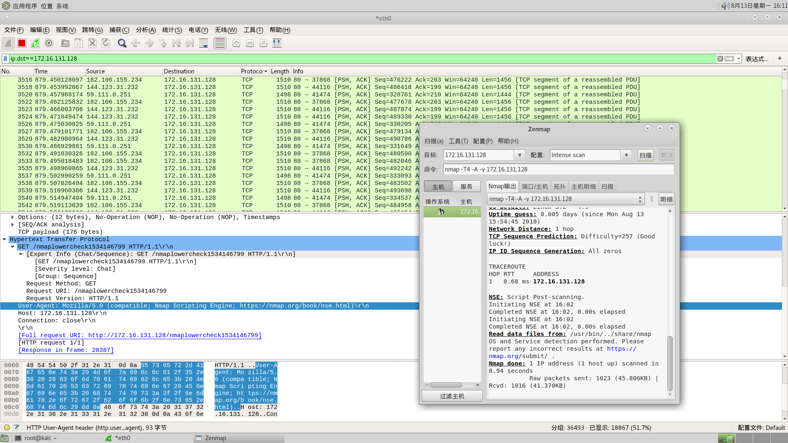
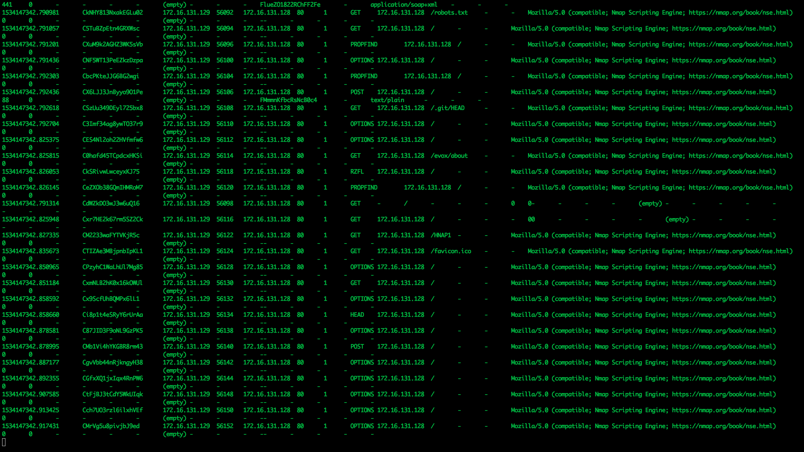
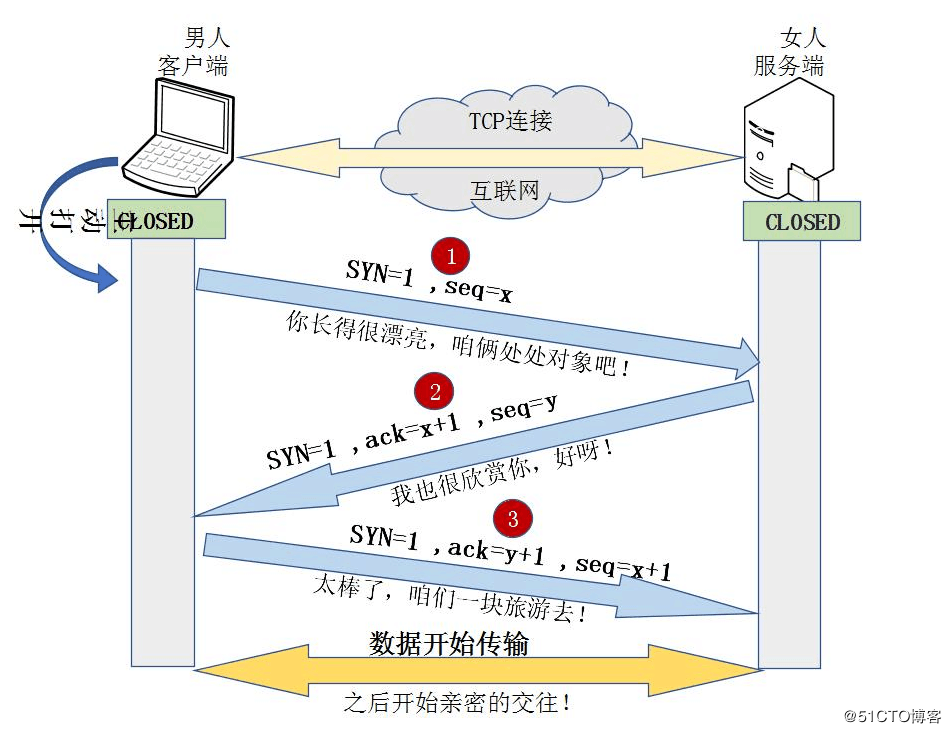
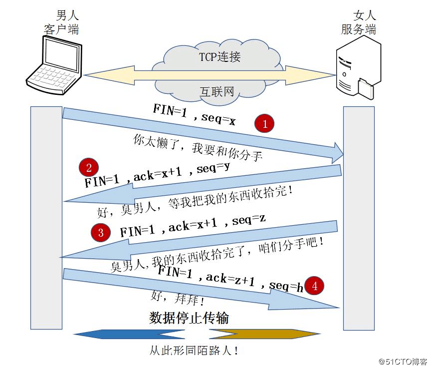

两种抓包方式
1、来自客户端的抓包方式
-
工具：wireshark
-
介绍：wireshark是一个网络包分析软件。Wireshark使用WinPCAP作为接口，直接与网卡进行数据报文交换。
-
目的：分析客户端的发出的请求以及服务器响应

2、来自服务端的抓包方式
-
工具: bro
-
介绍: Bro是一款被动的开源流量分析器。它主要用于对链路上所有深层次的可疑行为流量进行一个安全监控。更通俗点说就是，Bro支持在安全域之外进行大范围的流量分析，分析包括性能评估和错误定位。
-
协议: 支持多种应用层协议 DNS FTP HTTP IRC SMTP SSH SSL 等等
-
目的: 接受和分析来自链路的流量

目的
- 确定指定字段包含或者等于指定内容,用于nids相关规则编写。
NIDS规则的编写
- PATH(HTTP)
通过bro抓取分析Url里面的特征
/etc/passwd?format=%&xss="><script>alert('GoLismero');</script>&traversal=../../&sql=' OR 1;
对应的规则
<rule rule_id="NIDS_SCANNER1" type="Detection" auther_IPA="">
<rule_name>GoLismero Scanner</rule_name>
<harm_level>medium</harm_level>
<block>False</block>
<threshold/>
<freq_designate/>
<pre_check part="path">GoLismero</pre_check>
<check_list>
<path type="INCL"><![CDATA[GoLismero]]>/</path>
</check_list>
<alert_email/>
<action/>
<desc affected_target="Web Application">检测到GoLismero扫描</desc>
</rule>
- UA(HTTP)
通过bro分析http请求中的UA头
Mozilla/5.0 (compatible, GoLismero/2.0 The Web Knife; +https://github.com/golismero/golismero)
对应的规则
<rule rule_id="NIDS_SCANNER2" type="Detection" auther_IPA="">
<rule_name>GoLismero Traffic</rule_name>
<harm_level>medium</harm_level>
<block>False</block>
<threshold/>
<freq_designate/>
<pre_check part="type">http</pre_check>
<check_list>
<http.request.headers.user-agent type="REGEX">
<![CDATA[GoLismero]]></http.request.headers.user-agent>
</check_list>
<alert_email/>
<action/>
<desc affected_target="Web Application">GoLismero Scanner</desc>
</rule>
- 看看header里面有没有其他字段
GET / HTTP/1.1
Accept: text/html,application/xhtml+xml,application/xml;q=0.9,image/webp,image/apng,*/*;q=0.8
Accept-Encoding: gzip, deflate, br
Accept-Language: zh-CN,zh;q=0.9
Cache-Control: max-age=0
Connection: keep-alive
X-Scanner: Netsparker
Upgrade-Insecure-Requests: 1
User-Agent: 68.0.3440.106
对应规则
<rule rule_id="NIDS_SCANNER7" type="Detection" auther_IPA="">
<rule_name>Netsparker Scanner</rule_name>
<harm_level>medium</harm_level>
<block>False</block>
<threshold/>
<freq_designate/>
<pre_check part="http.request.headers.X-Scanner">Netsparker</pre_check>
<check_list>
<http.request.headers.X-Scanner type="INCL"><![CDATA[Netsparker]]></http.request.headers.X-Scanner>
</check_list>
<alert_email/>
<action/>
<desc affected_target="Web Application">Netsparker Scanner</desc>
</rule>
- 端口扫描
来自bro conn.log 的conn_state字段
S0 看到连接尝试，没有响应。
S1 已建立连接，未终止。
SF 正常建立和终止。
REJ 连接尝试被拒绝。
S2 已建立连接，并且看到发起人关闭尝试（但没有来自响应者的回复）。
S3 建立连接并通过响应者查看关闭尝试（但没有来自发起者的回复）。
RSTO 建立连接，发起者中止（发送RST）。
RSTR 响应者发送了RST。
RSTOS0 发起者发送了一个SYN后跟一个RST，未看到来自响应者的SYN-ACK。
RSTRH 响应者发送了一个SYN ACK后跟一个RST，未见过发起人的SYN。
SH 发起者发送了一个SYN后跟一个FIN，我们从未看到来自响应者的SYN ACK，连接是“半”打开状态。
SHR 响应者发送了一个SYN ACK后跟一个FIN，我们从未看到来自发起者的SYN。
OTH 没有看到SYN，没有关闭全部连接。
3次握手，建立tcp连接

4次挥手，断开连接
